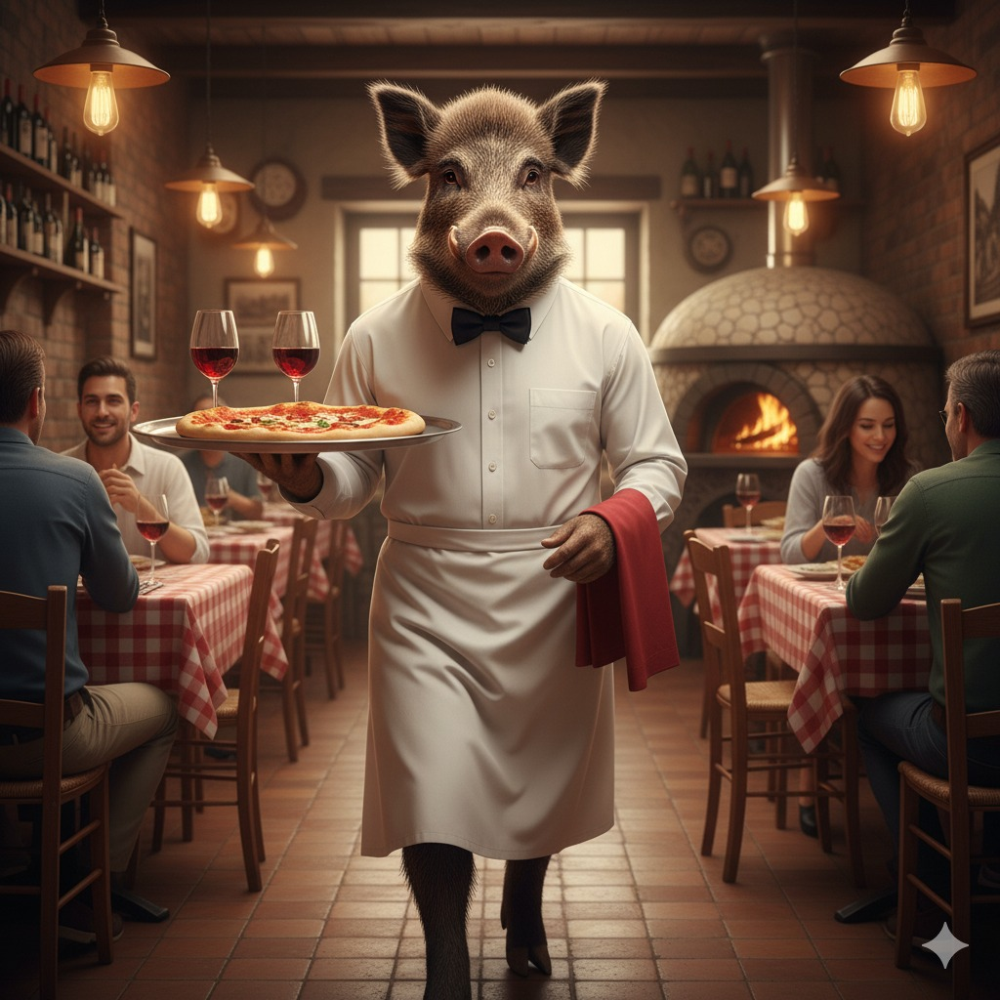
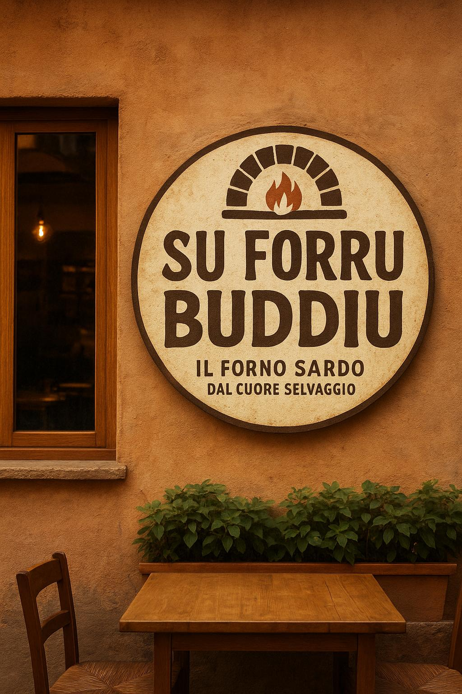
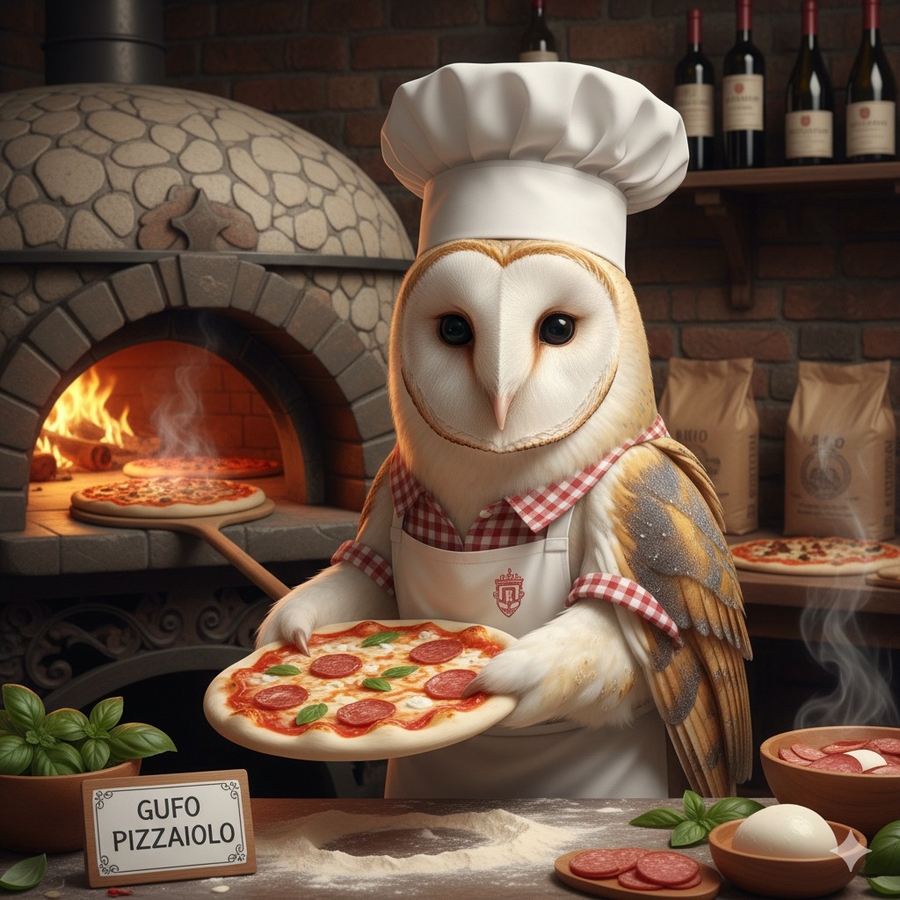
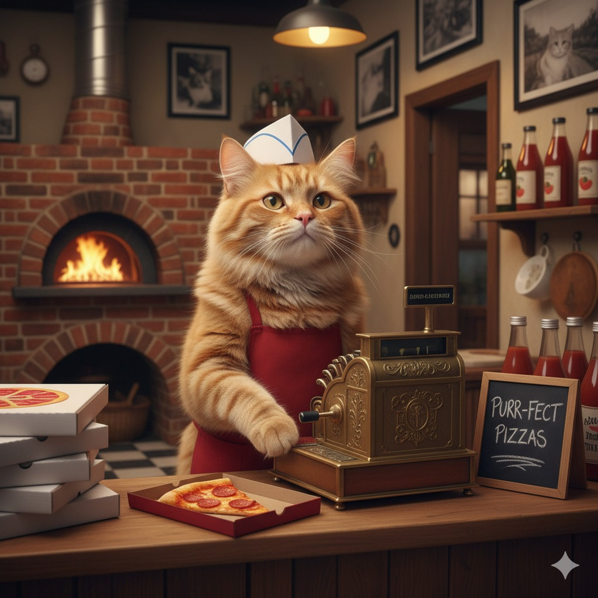
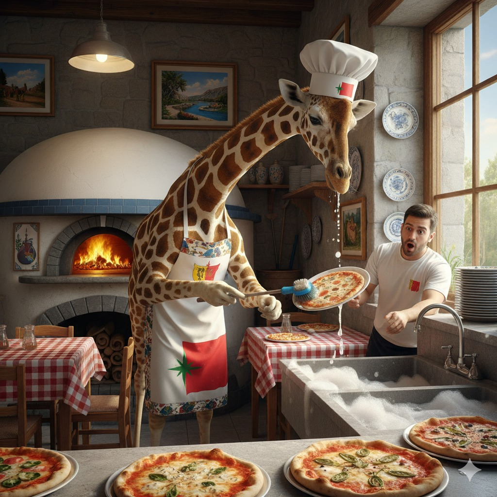

Marco Cubadda
Cameriere e sommelier
Accompagna gli ospiti ai tavoli, consiglia i vini perfetti e coordina il servizio in sala con professionalità.

Passione, tradizione e ingredienti genuini per offrirti la vera esperienza della pizza italiana e della cucina casalinga. Sfoglia il nostro menù oppure vai direttamente alle sezioni che ti incuriosiscono!
ista attentu a no ti abruxai
Accompagna gli ospiti ai tavoli, consiglia i vini perfetti e coordina il servizio in sala con professionalità.
Supervisiona il personale di sala, gestisce le prenotazioni e garantisce un’accoglienza impeccabile.

Impasta e inforna ogni pizza con tecnica artigianale, curando lievitazioni e cotture nel forno a legna.

Gestisce la cassa, coordina pagamenti e asporto e mantiene aggiornata la reportistica di fine turno.

Mantiene cucine e utensili impeccabili, supporta la brigata e garantisce ordine tra un servizio e l’altro.